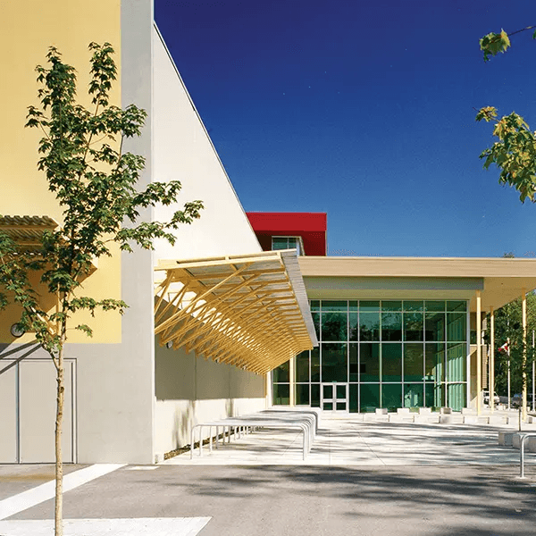
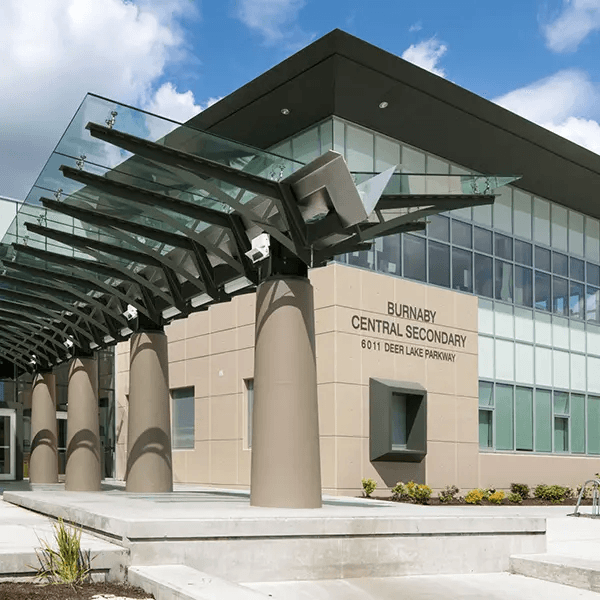

정보 업데이트 2026.08.30 · 2026–27 학년도 프로그램 비용 및 운영 정보 기준
BURNABY · HOMESTAY
버나비 아카데믹 관리형
캐나다 BC주 버나비(Burnaby) — 스카이트레인으로 밴쿠버 다운타운 20분, AP·IB 공립학교와 SFU·BCIT 캠퍼스를 갖춘 Grade 8~11 대상 홈스테이 관리형 유학
👤 Grade 8~11📍 Burnaby, BC (인구 약 25만)🚇 다운타운 20분🗓 10개월 과정
메트로타운·브렌트우드 등 생활 인프라와 버나비 마운틴·디어 레이크 등 자연환경을 함께 갖춘, 학업과 일상의 균형이 좋은 지역입니다.
PROGRAM SNAPSHOT
한눈에 보는 프로그램 개요
🎒
대상 학년
Grade 8~11
🏫
추천 학교
버나비 공립 Secondary 6개교
📚
방과후 수업
주 4회 (16:00~18:00)
💰
연간 비용
CA$58,500 (10개월)
SCHOOL PHOTOS
버나비 교육청 학교 환경학교별 개설 과목과 배정 가능 여부는 지원 전에 확인합니다

버나비 교육청 소속 학교 외관 · 에듀스마트 제공

버나비 지역 세컨더리 스쿨 · 에듀스마트 제공
VIDEO
영상으로 먼저 확인하세요에듀스마트 공식 소개 영상
▲ 에듀스마트 공식 소개 영상
WHY BURNABY
왜 버나비인가요?
버나비는 인구 약 25만 명의 도시로, 스카이트레인으로 밴쿠버 다운타운까지 약 20분 내 이동이 가능한 뛰어난 생활·교통 인프라를 갖추고 있습니다. 메트로타운·브렌트우드 등 주요 상업시설과 편리한 생활환경은 물론, 버나비 마운틴·버나비 레이크·디어 레이크 등 풍부한 공원과 자연 속에서 방과 후에도 건강한 일상을 유지할 수 있습니다. AP·IB 과정을 제공하는 공립학교와 SFU(사이먼프레이저대)·BCIT 캠퍼스 등 우수한 교육 자원을 바탕으로 체계적인 학업 성장을 지원합니다.
🚇
도심 접근성
스카이트레인으로 다운타운 20분, 메트로타운·브렌트우드 인접
🎓
교육 자원
AP·IB 제공 공립학교, SFU·BCIT 연계 조기 크레딧 기회
🌲
자연 & 문화
버나비 마운틴·디어 레이크, Shadbolt 예술센터·박물관
SCHOOL DISTRICT
버나비 교육청의 강점
📘
AP · IB
심화 과정 + 불어·중국어 이중언어 프로그램
💻
최신 학습환경
스마트보드·1:1 디바이스·STEM(코딩/로봇)
🏀
스포츠·예술
다양한 교내 활동 프로그램
🎓
SFU·BCIT 연계
조기 크레딧 취득 기회 제공
🏡
승인 홈스테이
교육청 승인 홈스테이 + 24시간 가디언
🩺
복지·상담
건강·안전 중심 복지, 전문 상담 기반 진로 지원
SCHOOL OPTIONS
버나비 Public Secondary 추천학교
공립 · 상위권
Burnaby Mountain / Cariboo Hill
Semester 학제 · Grade 8~12
레벨별 ELL 운영 · AP 과정 제공
공립 · 상위권
Burnaby North / Alpha
Semester 학제 · Grade 8~12
레벨별 ELL 운영 · AP 과정 제공
공립 · 중상위권
Burnaby Central Secondary
Semester 학제 · Grade 8~12
레벨별 ELL 운영 · AP 과정 제공
공립 · IB 운영
New Westminster Secondary
Semester 학제 · Grade 9~12
레벨별 ELL 운영 · IB(국제 바칼로레아) 과정 제공 — 이 시리즈 중 IB를 선택할 수 있는 유일한 옵션
💡 IB를 원한다면 버나비 — 코퀴틀람 프로그램의 추천학교는 모두 AP 중심으로 운영되지만, 버나비 프로그램에는 IB를 운영하는 New Westminster Secondary가 포함되어 있습니다. IB Diploma를 목표로 한다면 이 옵션을 우선 검토해 보세요. 단 New Westminster는 G9부터 시작하므로, G8 학생은 다른 학교에서 시작해야 합니다.
DAILY SCHEDULE
방과후 프로그램 시간표월요일 ~ 금요일
~15:00
캐나다 정규학교 수업
배정된 버나비 공립 Secondary에서 정규 커리큘럼 이수
15:00 ~16:00
교육 센터로 이동
학교 수업 마친 후 학생이 직접 교육 센터로 이동
16:00 ~18:00
방과후 수업 (주 4회)
Math / English / Social / Science / Chemistry / Physics — 영어 레벨과 학교 수업을 고려한 맞춤 구성
18:00 ~20:00
자습실 · 개인 과제 옵션
자기주도 학습, IXL 프로그램 활용 (옵션)
📌 방과후 수업은 내신관리 · 학교과제 · 입시지원을 함께 다루며, 수업 시간 및 구성은 시즌에 따라 변동될 수 있습니다.
프로그램 등록 첫 해는 영어수업 위주로 구성되며 수학 과목이 포함됩니다. 상기 스케줄은 현지 사정에 따라 변동될 수 있습니다.
SYSTEM
5단계 관리 시스템
01
SCHOOL SYSTEM
학제 및 학년배정
캐나다 정규교육 학제 이해 및 학년 배정 안내
버나비는 초등 K~G7 / 세컨더리 G8~12의 2분류 학제
02
SCHOOL PLACEMENT
학군 & 입학
지역 및 학군 분석, 학교 특성 파악 후 추천
학생의 학업 수준과 목표에 맞춘 학교 매칭
03
ACADEMIC STRATEGY
내신 & 입시전략
학년별 맞춤형 설계 · Dogwood 80 credits 관리
AP / IB / IELTS 등 진로별 시험 대비 전략
04
GUARDIANSHIP
가디언 관리
건강·생활 관리 및 아카데믹 관리
정기 리포트 발송 · 부모님과의 상시 소통
05
ADMISSION
신청 절차
수속 절차 및 학생비자 안내
Fee Schedule 안내 및 납부 일정 관리
COST
프로그램 비용 (10개월 · ALL INCLUSIVE)
2026-2027 · 10개월
학비 + 가디언 + 방과후수업 + MSP 보험 + 캐네디언 홈스테이
CA$58,500
약 5,850만 원
COMPARE
코퀴틀람 홈스테이 관리형(G7~10 공립) 대비
약 CA$7,200 저렴
약 720만 원 차이
●환율: 2026년 8월 기준 CAD/KRW 약 1,000원 적용, 환전 시점에 따라 변동 가능
●포함: 학교 학비, 가디언비, 방과후 수업, MSP 의료보험, 캐네디언 홈스테이
●학비가 인상될 경우 추가 비용을 납부해야 합니다
●포함/불포함 항목의 상세 내역은 브로슈어에 축약되어 있어, 등하교 라이드·용돈·액티비티 등 세부 항목은 상담 시 확인이 필요합니다
FAQ
학부모님이 자주 묻는 질문
Q1학교에서 교육센터까지 혼자 다녀야 한다는데 괜찮나요?
버나비는 스카이트레인과 버스 노선이 광역 밴쿠버에서 가장 촘촘한 지역 중 하나라 이동 자체는 어렵지 않습니다. 현지 중고등학생은 대부분 대중교통으로 통학합니다. 다만 G8(만 13세 전후) 학생에게는 초기 부담이 될 수 있으므로, 홈스테이 배정 후 집–학교–교육센터의 실제 경로를 함께 확인하고 첫 주는 동행 연습을 요청하시는 것을 권합니다.
Q2IB와 AP 중 뭘 골라야 하나요?
목표에 따라 갈립니다. AP는 과목 단위로 골라 듣고 시험을 보는 방식이라 부담 조절이 가능하고, 미국 대학 학점 인정에 유리합니다. IB Diploma는 2년간 6과목 + 논문(EE) + TOK를 모두 이수하는 통합 과정으로 난이도가 높지만 유럽·아시아를 포함해 국제적 인정 범위가 넓습니다. 캐나다 대학만 목표라면 둘 다 필수가 아니며 일반 과정 고득점이 가장 유리합니다. 이 프로그램에서 IB는 New Westminster Secondary(G9~12)에서만 가능합니다.
Q3Dogwood 80 credits가 무슨 뜻인가요?
BC주 고등학교 졸업장(Dogwood Diploma)을 받기 위한 학점 요건입니다. Grade 10~12 3년간 총 80학점을 채워야 하며, 이 중 필수 과목이 52학점, 선택 과목이 28학점입니다. 과목 하나가 보통 4학점이니 3년간 약 20과목을 이수하는 셈입니다. 유학생이 놓치기 쉬운 지점은 필수 과목을 빠뜨려 12학년에 몰아 듣게 되는 상황이라, 이 프로그램이 학년별 스케줄표를 관리하는 이유가 여기 있습니다.
Q4버나비는 한국 학생이 많지 않나요?
솔직히 말씀드리면 랭리보다 많습니다. 버나비는 아시아계 인구 비중이 높은 다문화 도시이고, 한인 커뮤니티도 형성되어 있습니다. 영어 몰입 극대화가 최우선이라면 랭리가 낫습니다. 반대로 버나비의 강점은 AP·IB를 운영하는 우수 공립학교, SFU·BCIT 접근성, 다운타운 20분이라는 인프라입니다. 어느 쪽이 아이에게 더 필요한지로 판단하시면 됩니다.
Q5첫 해에 영어 위주면 다른 과목은 어떻게 하나요?
의도된 순서입니다. 등록 첫해는 영어 수업 위주 + 수학으로 구성되는데, 영어 기반이 없는 상태에서 Science·Social을 병행하면 어느 쪽도 성과가 나지 않기 때문입니다. 수학을 함께 넣는 이유는 언어 부담이 적어 초기에 성적을 확보할 수 있는 과목이기 때문입니다. 영어 레벨이 올라가면 Science·Chemistry·Physics·Social로 확장됩니다.
Q618시 이후 자습실은 꼭 써야 하나요?
옵션입니다. 필수 프로그램은 16:00~18:00 주 4회 방과후 수업까지이고, 18:00~20:00 자습실·개인 과제·IXL은 선택입니다. 자기주도 학습이 되는 학생은 홈스테이에서 해도 되고, 집에서 집중이 안 되는 학생은 자습실을 쓰는 편이 낫습니다. 추가 비용 발생 여부는 계약 시 확인하세요.
Q7SFU·BCIT 조기 크레딧은 누구나 받나요?
아닙니다. 버나비 교육청이 SFU·BCIT와 연계한 조기 크레딧 기회를 제공하지만, 성적 요건과 학교별 선발 절차가 있는 우수 학생 대상 프로그램입니다. 영어가 아직 ELL 단계인 유학생이 첫해부터 참여하기는 현실적으로 어렵고, 보통 Grade 11~12에 내신이 안정된 학생이 지원합니다. 참여 가능 여부는 학교 카운슬러를 통해 확인해야 합니다.
Q8홈스테이는 어떻게 배정되나요?
버나비 교육청이 승인 홈스테이 시스템과 24시간 가디언 체계를 운영하며, 비용에 캐네디언 홈스테이가 포함되어 있습니다. 즉 기본값은 현지인 가정입니다. 한인 가정 선택 가능 여부와 추가 비용은 브로슈어에 명시되어 있지 않아 상담 시 확인이 필요하지만, 영어 몰입을 위해서는 현지인 가정을 유지하시는 편을 권합니다.
Q9코퀴틀람 프로그램과 뭐가 다른가요?
관리 밀도와 비용의 차이입니다. 코퀴틀람(연 6.4~7.9만 달러)은 등하교 차량, 매일 저녁 프로그램, 기숙사 옵션까지 갖춘 밀착 관리형입니다. 버나비(연 5.7만 달러)는 주 4회 방과후 수업과 가디언 관리가 중심이고 이동은 자율입니다. 스스로 움직일 수 있는 학생이라면 버나비가 비용 효율이 좋고, 손이 많이 가는 학생이라면 코퀴틀람이 안전합니다.
Q10MSP 보험이면 병원비 걱정은 없나요?
아닙니다. MSP는 BC주 공공 의료보험으로 의사 진료와 입원은 커버하지만 치과·안과·처방약·앰뷸런스·물리치료는 제외됩니다. 유학생이 실제로 쓰는 비용의 상당 부분이 여기에 해당하므로, 대부분 민간 보조보험을 추가로 듭니다. 특히 교정 치료 중인 학생은 한국에서 마무리하고 오시거나 치과 특약을 확인하시는 것이 좋습니다.